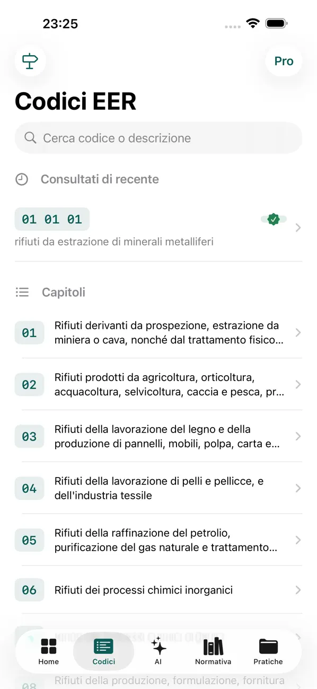
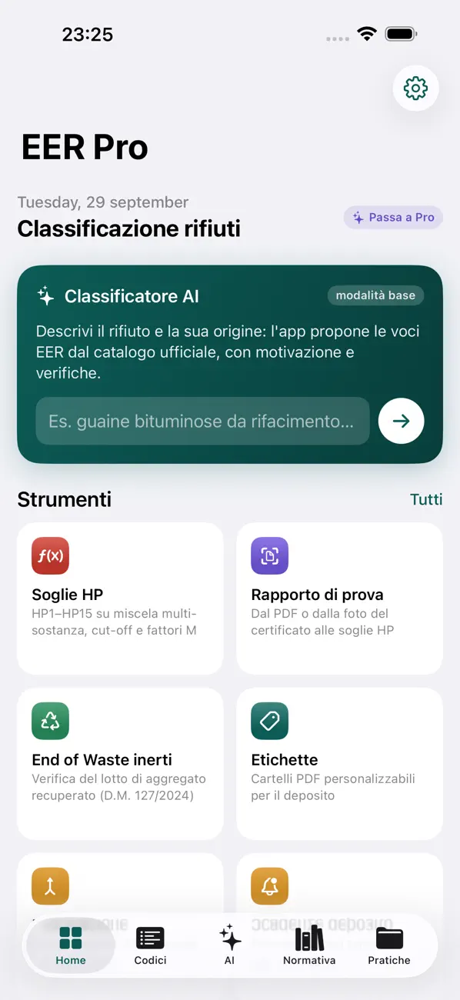
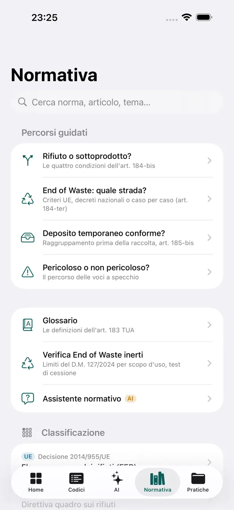
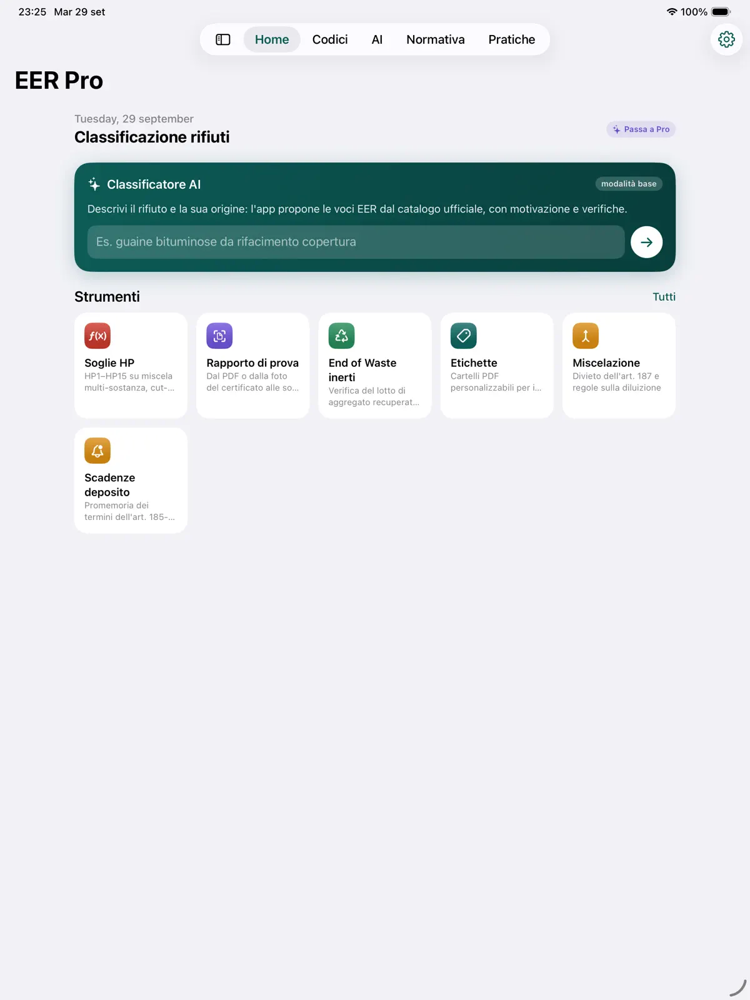
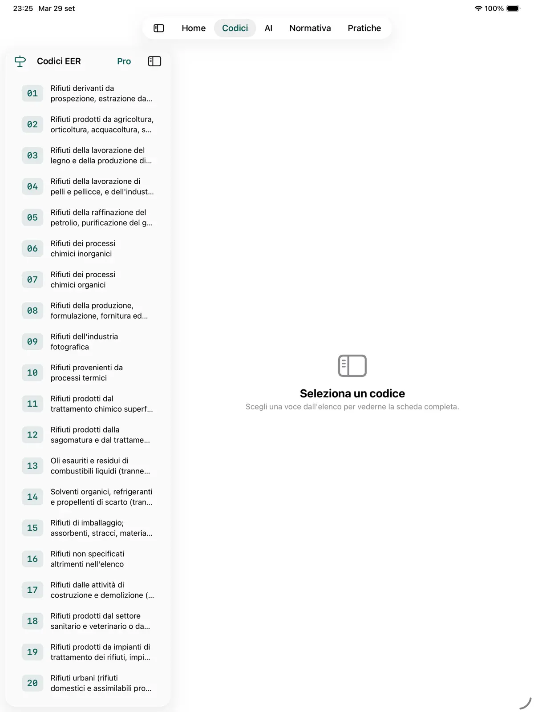

Classificazione dei rifiuti, dal codice EER al documento firmato.
EER Pro è lo strumento professionale per chi classifica rifiuti ogni giorno: codici EER (ex CER), soglie di pericolo HP1–HP15, lettura del rapporto di prova, normativa italiana ed europea e pratiche in PDF. Con AI che lavora sul dispositivo: nessun account, nessun server.
Download gratuito. Funzioni Pro con abbonamento mensile e prova gratuita di 1 settimana — prezzo indicato sull'App Store.
842 codici EER
HP1–HP15
Apple Intelligence on-device
iPhone e iPad · iOS 26+


Perché EER Pro
Non è l'ennesimo elenco di codici CER.
Attribuire il codice a un rifiuto significa scegliere la voce giusta, valutare le caratteristiche di pericolo sui valori di laboratorio, verificare la normativa e documentare tutto. EER Pro ti accompagna dal dubbio sulla voce EER fino al documento firmato da consegnare all'impianto, con tutto il lavoro che resta sul tuo dispositivo.
Il lavoro di classificazione, oggi
Voci a specchio e capitoli da interpretare tra 842 codici a sei cifre.
Concentrazioni del rapporto di prova da trascrivere, convertire e confrontare con le soglie HP.
Riferimenti normativi sparsi tra TUA, regolamenti UE, RENTRI, Albo Gestori, End of Waste.
Documenti, foto e firme da raccogliere per ogni cliente e commessa.
Con EER Pro
Catalogo EER completo con voci a specchio evidenziate e guida gerarchica alla scelta.
Classificatore AI che propone il codice con motivazione e livello di confidenza.
Import del rapporto di prova (PDF, scansione o foto) e verifica HP1–HP15 automatica.
Pratiche con relazione tecnica, foto, firma e scheda di caratterizzazione in PDF o CSV.
Funzioni
Tutto ciò che serve per classificare un rifiuto speciale
Dalla scelta del codice EER alla verifica delle caratteristiche di pericolo HP, fino alla scheda di caratterizzazione. Le funzioni contrassegnate Pro richiedono l'abbonamento.
Catalogo EER completo Gratis
Tutti gli 842 codici a sei cifre, con capitoli, pericolosità e voci a specchio evidenziate. Ricerca per codice o descrizione, guida gerarchica alla scelta della voce, preferiti, codici recenti, copia rapida della scheda e ricerca da Spotlight.
Classificatore AI Pro
Descrivi il rifiuto in linguaggio naturale e ottieni una proposta di codice con motivazione e livello di confidenza. Il modello lavora sul dispositivo tramite Apple Intelligence e sceglie solo tra i codici reali del catalogo: nessuna voce inventata.
Soglie HP con database sostanze Pro
Verifica delle caratteristiche HP1–HP15 su miscele multi-sostanza secondo il Reg. (UE) 1357/2014, con soglie per via di esposizione e regola corretta di somma o singola sostanza. Database di 64 sostanze ricorrenti con classi CLP e fattori M. HP14 secondo il Reg. (UE) 2017/997.
Dal rapporto di prova alle soglie HP Pro
Importa il rapporto di prova di laboratorio come PDF digitale o come scansione/foto: l'app estrae sostanze e concentrazioni con OCR e AI, verifica ogni valore sul testo originale, converte le unità e applica i fattori stechiometrici worst case per i metalli.
Normativa italiana ed europea
Oltre 26 norme con sintesi, punti chiave per articolo e link al testo vigente su Normattiva ed EUR-Lex: TUA, elenco EER, regolamenti HP e CLP, RENTRI, Albo Gestori, discariche, End of Waste, terre e rocce, amianto, RAEE. Glossario e assistente normativo AI che cita le fonti.
Divieto di miscelazione Pro
Confronta due codici e ottieni l'esito motivato secondo l'art. 187 del TUA, con i divieti assoluti per amianto, PCB e POP, sanitari infettivi e oli usati, e le condizioni che rendono la miscelazione ammissibile.
Strumenti da campo Pro
Convertitore mg/kg, percento e ppm; conversione peso/volume e verifica dei limiti di 30 e 10 m³ del deposito temporaneo; ricerca inversa frasi H → HP; etichette PDF A4 per i contenitori con il logo della tua società; promemoria delle scadenze del deposito.
Pratiche e documenti Pro
Salva ogni classificazione con cliente, commessa, stato fisico, quantità, rapporto di prova e impianto di destino. Stato bozza/verifica/completata, relazione tecnica, foto del cantiere, firma a schermo intero, export della scheda di caratterizzazione in PDF, report o CSV.

Versione 2.1 — disponibile ora
Verifiche documentali, cantiere e trasporto
L'aggiornamento 2.1 estende EER Pro all'intera filiera: dalla verifica di trasportatori e impianti all'audit pre-demolizione, fino ai dati pronti per FIR e RENTRI.
Verifiche per ruolo 2.1
Responsabilità, adempimenti e controlli per direttore dei lavori, committente, responsabile dei lavori, CSE, impresa, subappaltatore, trasportatore, intermediario e impianto. Verbale PDF firmato con l'esito di ogni punto.
Trasportatori, impianti, formulari 2.1
Verifiche passo passo di trasportatore (Albo, categoria, codici, targhe, scadenza), impianto di recupero, discarica, intermediario, carico e formulario, ritorno del FIR entro 3 mesi.
Cantiere e destino 2.1
Audit pre-demolizione con inventario per codice EER e report PDF/CSV; piano analitico e richiesta al laboratorio; End of Waste inerti (D.M. 127/2024); recupero semplificato (D.M. 05/02/1998) e test di cessione.
FIR, RENTRI e ADR 2.1
Dati pronti per FIR e RENTRI: operazione R/D, stato fisico, quantità, HP. Guida alla classificazione ADR dei rifiuti e HP indicate dal laboratorio.
Scadenze e adempimenti 2.1
Promemoria per deposito temporaneo, MUD, Albo, RENTRI, omologhe e titoli dei fornitori.
Nuove voci EER batterie 2.1
Le nuove voci dell'elenco europeo per le batterie, in vigore dal 9 dicembre 2026 (Decisione delegata UE 2025/934), con anteprima nelle Impostazioni.
Per chi è
Pensata per i professionisti della filiera dei rifiuti
Per chi classifica, produce, trasporta o riceve rifiuti speciali e deve poter documentare ogni scelta.
Consulenti ambientaliCodice EER, verifica HP sui rapporti di prova, scheda di caratterizzazione e relazione tecnica.
Tecnici di demolizione e bonificaClassificazione in cantiere, divieto di miscelazione, etichette e scadenze del deposito.
Imprese edili e subappaltatoriInventario dei materiali per codice EER e documentazione delle pratiche.
Direttori lavori, committenti, RL e CSEResponsabilità, adempimenti e verifiche documentali con verbale PDF firmato (v2.1).
Trasportatori e intermediariDati pronti per FIR e RENTRI, guida ADR, verifiche di Albo e titoli (v2.1).
Impianti e responsabili gestione rifiutiControllo di codici, caratteristiche HP, omologhe e scadenze.
Privacy e AI on-device
I dati dei tuoi clienti non escono dall'iPhone o dall'iPad.
Catalogo, schedario ed elaborazione AI funzionano sul dispositivo. L'AI usa Apple Intelligence on-device, senza invio a server esterni.
Nessun account
Nessuna registrazione e nessun login: apri l'app e lavori.
AI sul dispositivo
Il classificatore e l'assistente normativo usano Apple Intelligence on-device. Il modello sceglie solo tra i codici reali del catalogo.
App senza server né tracciamento
Nell'app: nessun server dello sviluppatore, nessuno strumento di analisi o pubblicità. Questo sito usa il tag di Google Ads solo se accetti i cookie (informativa cookie). Leggi l'informativa dell'app.
Come funziona
Dal dubbio sulla voce EER alla pratica completa, in 3 passi
Descrivi o cerca il rifiuto
Cerca per codice o descrizione nel catalogo EER, segui la guida gerarchica oppure descrivi il rifiuto in linguaggio naturale al classificatore AI.
Importa il rapporto di prova
Carica il PDF o fotografa il rapporto di laboratorio: sostanze e concentrazioni vengono estratte, verificate sul testo originale e confrontate con le soglie HP1–HP15.
Salva e documenta
Registra la pratica con cliente, commessa e impianto di destino, aggiungi foto e firma ed esporta la scheda di caratterizzazione in PDF o CSV.
iPhone e iPad
In cantiere sull'iPhone, in ufficio sull'iPad
App universale ottimizzata per iPad: barra laterale, elenco e scheda affiancati, larghezza di lettura curata.


Gratis e Pro
Scarica gratis, passa a Pro quando ti serve
Gratis
Consultazione dell'intero catalogo EER
Guida alla scelta del codice
Schedario normativo e glossario
Preferiti
EER Pro Abbonamento
Classificatore AI e assistente normativo
Soglie HP con database sostanze e import del rapporto di prova
Archivio pratiche con scheda di caratterizzazione, report PDF ed export CSV
Abbonamento mensile con prova gratuita di 1 settimana. Prezzo indicato sull'App Store.
Abbonamento mensile con rinnovo automatico: pagamento addebitato sull'Apple Account alla conferma, rinnovo salvo disdetta almeno 24 ore prima della fine del periodo, gestibile dalle impostazioni dell'Apple Account.
FAQ
Domande frequenti
Che differenza c'è tra codice EER e codice CER?
EER sta per Elenco Europeo dei Rifiuti, la classificazione a sei cifre che ha sostituito il Catalogo Europeo dei Rifiuti (CER). Molti continuano a parlare di "codici CER": in EER Pro trovi lo stesso elenco, con tutti gli 842 codici, capitoli, pericolosità e voci a specchio.
L'app decide al posto mio il codice del rifiuto?
No. Il classificatore AI propone un codice con motivazione e livello di confidenza, scegliendo solo tra i codici reali del catalogo. EER Pro è uno strumento di supporto: l'attribuzione definitiva del codice resta responsabilità del tecnico.
Come vengono verificate le caratteristiche di pericolo HP?
La verifica HP1–HP15 su miscele multi-sostanza segue il Reg. (UE) 1357/2014 (HP14 secondo il Reg. (UE) 2017/997), con soglie per via di esposizione e regola di somma o singola sostanza, e un database di 64 sostanze ricorrenti con classi CLP e fattori M.
Posso importare il rapporto di prova del laboratorio?
Sì, come PDF digitale o come scansione/foto. L'app estrae sostanze e concentrazioni con OCR e AI, verifica ogni valore sul testo originale, converte le unità e passa i dati alla verifica HP.
Serve un account? Dove finiscono i miei dati?
Nessun account e nessun server: i dati restano sul tuo iPhone o iPad e l'AI lavora sul dispositivo tramite Apple Intelligence. Dettagli nell'informativa sulla privacy.
Su quali dispositivi funziona?
Su iPhone e iPad con iOS/iPadOS 26.0 o successivo. Le funzioni di intelligenza artificiale si basano su Apple Intelligence.
Quanto costa?
Il download è gratuito e include la consultazione del catalogo EER, la guida alla scelta del codice, lo schedario normativo, il glossario e i preferiti. Le funzioni Pro sono disponibili con un abbonamento mensile con prova gratuita di 1 settimana; il prezzo aggiornato è indicato sull'App Store.
EER Pro gestisce FIR e RENTRI?
EER Pro non è un gestionale per la compilazione o la trasmissione di FIR e registri. Con la versione 2.1 prepara i dati utili per FIR e RENTRI (operazione R/D, stato fisico, quantità, HP) e include promemoria per le scadenze RENTRI.